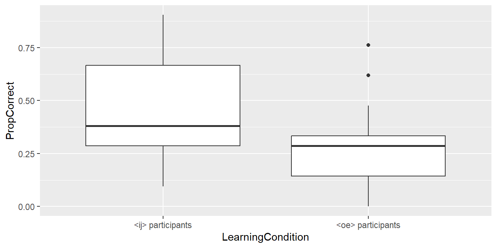
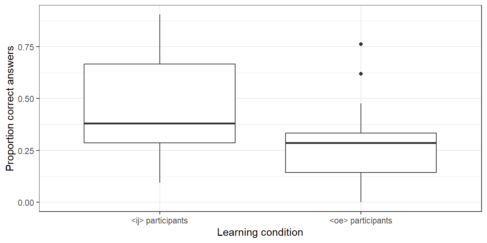
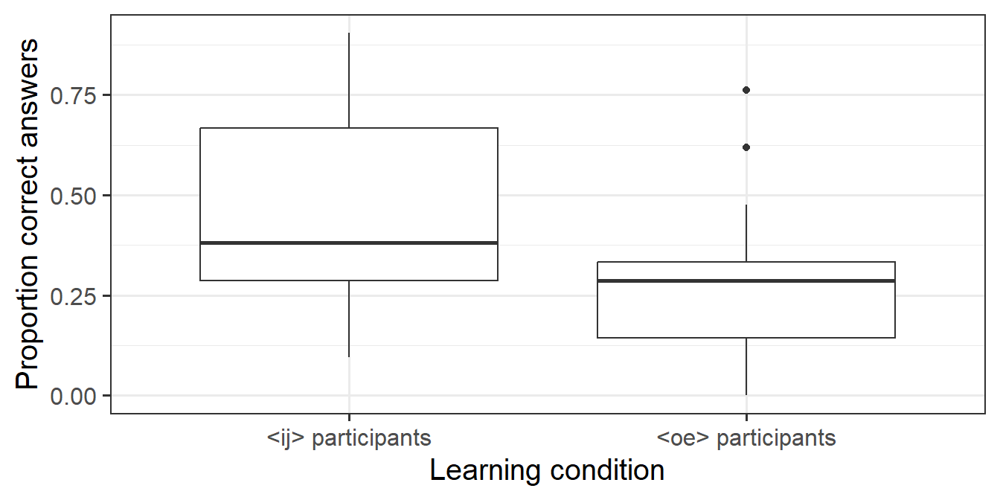

Chapter 3 Week 3: Drawing a boxplot
- Drawing basic boxplots to compare groups.
- Adjusting the appearance of plots.
3.1 Reading in data
- Download the file
VowelChoices_ij.csvfrom Moodle to thedatasubdirectory of your R project directory. This file contains a part of the results of a learning experiment (Vanhove 2016) in which 80 participants were assigned to one of two learning conditions (LearningCondition). The columnPropCorrectcontains the proportion of correct answers for each participant, and the question we want to answer concerns the difference in the performance between learners in the different conditions. - Open your R project.
- Create a new script and copy the commands with which you loaded the packages and imported the dataset from last week’s script to this new script.
- Adapt the command for importing the data so that it’ll read in the file
VowelChoices_ij.csvand that the dataset will be known in R asd_box. Execute these commands.
From now on, I’ll assume that you won’t enter commands directly to the R console but that you’ll first enter them into a script which you’ll then execute (= much more efficient and manageable).
Tip: Comment your code profusely (with #). This way you’ll be able to understand what your code accomplishes in a few months’ time, which will make it easier to recycle your scripts. You don’t have to copy my comments verbatim. “Your closest collaborator is you six months ago but you don’t reply to email.”
- Inspect the dataset in R to check that it contains 80 rows and 3 labelled columns (
Subject,LearningCondition,PropCorrect). - You can obtain a quick summary of a dataset with the
summary()command::
## Subject LearningCondition PropCorrect
## Length:80 Length:80 Min. :0.0000
## Class :character Class :character 1st Qu.:0.2262
## Mode :character Mode :character Median :0.3333
## Mean :0.3685
## 3rd Qu.:0.4762
## Max. :0.90483.2 Drawing boxplots
See Johnson (2013) for an explanation of boxplots. Here we’ll draw basic boxplots in order to compare two parts of a dataset. But you can also use boxplots to compare more than two groups. Next week we’ll add the individual data points to these boxplots which can make them more informative still.
From now on, I’ll always assume that you’ve loaded the tidyverse and here packages.
- The following command plots the accuracy
data (
PropCorrect) using a separate boxplot for each condition (LearningCondition). You already know how the first three lines work; the fourth specifies that the data should be plotted using boxplots.
# Boxplot PropCorrect vs. LearningCondition
ggplot(data = d_box, # specify dataset
aes(x = LearningCondition, # x-axis: groups/conditions
y = PropCorrect)) + # y-axis: results
geom_boxplot() # summarise data with boxplots
- Label the x-axis as “Learning condition” and the y-axis as “Proportion correct answers”. I don’t provide the commands for doing so; you already know them.
3.3 Adjusting the appearance of plots
- By default,
ggplot2(the part of thetidyversethat takes care of plotting) produces plots with a grey background (which doesn’t seem to please anyone save for its developer). This can be changed by appending the commandtheme_bw()(black and white) to theggplotcall:
ggplot(data = d_box,
aes(x = LearningCondition,
y = PropCorrect)) +
geom_boxplot() +
xlab("Learning condition") +
ylab("Proportion correct answers") +
theme_bw()
For other options, see http://ggplot2.tidyverse.org/reference/ggtheme.html.
- To change the font size, insert a number between the brackets of the
theme_bw()command. Finding a suitable font size is a matter of trial and error.
ggplot(data = d_box,
aes(x = LearningCondition,
y = PropCorrect)) +
geom_boxplot() +
xlab("Learning condition") +
ylab("Proportion correct answers") +
theme_bw(15)
- When you’re happy with a plot, you can save it using
ggsave(). You can set the width and height of the figure using thewidthandheightparameters, e.g.,
3.4 Exercise
The file Vanhove2014_CognateProfile.csv contains data from Vanhove (2014).
163 Swiss-Germans attempted to translate 45 written Swedish words, all of which
had German, English and/or French cognates.
To check which participants already had some minimal knowledge of Swedish,
they also had to translate five words without cognates in German, English or French
(e.g., älska ‘to love’); these are known as ‘profile words’.
For the subsequent analysis, it was important to know
(a) how many participants could translate at least one such profile word correctly; and
(b) if participants who could translate at least one such profile word did better at translating cognates than those who couldn’t.
The column CorrectCognates contains the number of correct cognate
translations per participant; the column shows whether the participant
in question was able to translate at least one profile word correctly (yes vs. no).
- Read in the dataset into R and use the
summary()function to find out how many participants translated at least one profile word correctly. Mention your answer in the script as a comment. - Use a boxplot to compare the number of correctly translated cognate words between participants that could translate at least one profile word correctly and those that couldn’t. Label your axes appropriately.
- Compile the HTML report.
- Submit both the boxplot and the HTML report.
References
Johnson, Daniel Ezra. 2013. Descriptive statistics. In Robert J. Podesva & Devyani Sharma (eds.), Research methods in linguistics, 288–315. Cambridge: Cambridge University Press.
Vanhove, Jan. 2014. Receptive multilingualism across the lifespan: Cognitive and linguistic factors in cognate guessing. University of Fribourg PhD thesis. http://doc.rero.ch/record/210293.
Vanhove, Jan. 2016. The early learning of interlingual correspondence rules in receptive multilingualism. International Journal of Bilingualism 20(5). 580–593. doi:10.1177/1367006915573338.